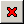

Полуавтоматическая установка обновлений RDS при помощи программы «RdsGet.exe»
Программа «RdsGet.exe» может самостоятельно проверять наличие обновлений RDS, и, при обнаружении обновленных модулей, загружать и устанавливать их. При установке автоматически создается архив заменяемых файлов, поэтому последние установленные обновления можно отменить с помощью этой же программы, вернув RDS в состояние до обновления.
Загрузка и установка обновлений при помощи программы «RdsGet.exe» возможна только в том случае, если RDS установлен в папку «Мои документы» или другую папку, в которую по умолчанию разрешена запись без привилегий администратора. Если RDS установлен в папку «Program Files», папку в корне диска «C» и т.п., то программа не сможет распаковать и заменить необходимые для работы файлы. В этом случае следует, как и раньше, вручную устанавливать обновления из рассылаемых архивов ZIP.
Программа может использоваться как для обновления любой уже установленной версии RDS, так и для установки «с нуля», когда в папке нет ничего, кроме программы «RdsGet.exe» и необходимых для ее работы библиотек во вложенной папке «\Dll».
Программы «RdsGet.exe» и «RdsUnpack.exe» используют одинаковый формат файлов, поэтому модули обновления можно, при желании, загружать вручную и устанавливать при помощи «RdsUnpack.exe».
В процессе установки программе «RdsGet.exe» требуется доступ в Интернет, поэтому в антивирусе или сетевом экране нужно разрешить ей этот доступ. Кроме того, вспомогательной программе «rdscopier.exe» необходимо разрешить копирование и удаление файлов – эта программа автоматически создается для того, чтобы можно было обновить исполняемый файл «RdsGet.exe».
После установки обновлений любым способом крайне желательно проверить всю папку RDS на наличие вирусов.
Запуск и тестирование возможности обновления
Для проверки наличия обновлений, их загрузки и установки следует запускать программу «RdsGet.exe» из папки установки RDS. Перед этим необходимо закрыть все запущенные копии RDS, иначе файлы RDS будут заблокированы и программа не сможет их обновить.
Программа «RdsGet.exe» в папке установки RDS
При первом запуске программа предложит протестировать возможность чтения/записи файлов в папке установки RDS, выведя сообщение «Провести проверку возможности записи и изменения исполняемых файлов в текущей папке установки (это необходимо для работы программы обновления)?». В этом сообщении можно выбрать один из трех вариантов ответа:
- «Да» – программа проверит возможность работы с файлами (рекомендуется);
- «Нет» – программа не будет ничего проверять и больше не будет предлагать провести проверку;
- «Отмена» – сейчас программа не будет ничего проверять, но снова предложит провести проверку при следующем запуске.
Настоятельно рекомендуется выполнить предлагаемую проверку. Проверка займет некоторое время, и, по ее окончании, будет выведен отчет со списком удачных и неудачных операций.
Если в процессе проверки были обнаружены ошибки, в окне программы красным цветом будут выведены соответствующие сообщения, а в конце отчета будет написано «Обновление может не работать: возможно, недостаточно прав» (см. рисунок). В этом случае следует либо заново установить RDS в другую папку (например, в папку внутри папки «Мои документы»), либо, если это по каким-либо причинам невозможно, вручную устанавливать обновления из рассылаемых разработчиками архивов ZIP без использования программы «RdsGet.exe».
Отчет о неудачной проверке работы с файлами в папке установки RDS
Если в процессе проверки ошибок не было, в окне программы рядом с названием каждой операции будет отображаться зеленая галочка, а в конце отчета будет написано «Все тесты выполнены успешно» (см. рисунок). Это значит, что программа, вероятнее всего, сможет обновлять исполняемые файлы RDS.
Отчет об успешном завершении проверки работы с файлами в папке установки RDS
После проверки для перехода к главному окну программы следует нажать кнопку «Продолжить».
Загрузка и установка обновлений
Главное окно программы обычно содержит список доступных обновлений. По умолчанию программа настроена так, чтобы проверять наличие обновлений при каждом запуске. Если эта настройка выключена, то на месте списка будет написано «Обновления не проверялись», и для получения списка обновлений следует нажать кнопку «Проверить» в правой части окна. Если в данный момент установлена последняя версия RDS, не требующая обновления, то на месте списка будет написано «Нет обновленных модулей».
Главное окно программы со списком обновлений
Список обновлений в окне разделен на категории: «основные файлы», «справка» и т.п. В каждой категории перечислены модули, которые можно установить. Слева от названий модулей, выбранных для установки, отображаются галочки, которые можно включать и выключать щелчком левой кнопки мыши. Под списком модулей выводится краткое описание модуля, выбранного в данный момент.
Справа от списка находятся кнопки, разрешающие или запрещающие установку выбранного в списке модуля и управляющие работой программы:
| Кнопка | Действие |
|---|---|
| Устанавливать выбранный модуль (ставит галочку слева от названия выбранного модуля, вместо использования этой кнопки можно просто щелкнуть левой кнопкой мыши по месту для галочки). | |
| Не устанавливать выбранный модуль (снимает галочку слева от названия выбранного модуля, вместо использования этой кнопки можно просто щелкнуть левой кнопкой мыши по галочке). | |
|  | Не устанавливать выбранный модуль и больше не предлагать его установку (действие этой кнопки можно отменить в настройках программы). |
Открывает меню дополнительных действий со следующими пунктами:
|
Выбор, сделанный пользователем в списке, запоминается программой. Например, если отказаться от установки какого-либо модуля, при следующем запуске программы галочки слева от его названия не будет.
Для установки обновления следует нажать кнопку «Установить» в правой части окна. Программа начнет загружать и распаковывать архивы модулей, при этом в ее окне будут отображаться выполняемые действия и их результаты. Если отмена операций не отключена в настройках программы, то по окончании установки обновлений будет создан архив с замененными или удаленными в процессе обновления файлами, с помощью которого это обновление можно будет отменить.
Отчет о загрузке и установке обновлений
Если выбранные обновления были установлены успешно, в конце отчета быдет выведено соответствующее сообщение. При настройках по умолчанию окно программы при этом автоматически закроется через 10 секунд. Если же в процессе установки были обнаружены ошибки, в отчете будут сообщения об этом с красными и желтыми значками, и окно программы останется на экране.
Настройка программы
Для настройки параметров программы следует нажать кнопку «Настройка» в правой части главного окна программы. При этом откроется отдельное окно с двумя вкладками.
На вкладке «Общие» задаются настройки, управляющие поведением и внешним видом программы.
Вкладка «Общие» окна настройки программы
- «URL списка обновлений» – адрес (URL) сайта, откуда программа получает список доступных обновлений. По умолчанию программа настроена на список на данном сайте, и в этом поле ввода указан текст «https://rochinaa.github.io/updatemodules.html?[[time]]». Если список обновлений будет перемещен, новый адрес нужно будет получить у разработчиков.
- «Заменять [[переменные]] на их значения» – флажок, позволяющий подставлять в адрес сайта, указанный выше, значения внутренних переменных программы. По умолчанию в этот адрес подставляется значение текущего времени «[[time]]» для предотвращения кэширования списка обновлений. Лучше оставить этот флажок включенным.
- «Проверять обновления при запуске программы» – если флажок включен, то при запуске программы «RdsGet.exe» будет автоматически выполняться проверка обновлений. Эту проверку всегда можно выполнить вручную, нажав в главном окне программы кнопку «Проверить».
- «Установить рекомендованные или ранее выбранные обновления и завершить программу» – если флажок включен, то после проверки все обнаруженные обновления будут установлены автоматически, после чего программа завершится. По умолчанию флажок выключен, поскольку такой режим не дает пользователю возможности выбрать, какие обновления устанавливать, а какие – нет.
- «Завершить программу после успешного обновления» – если флажок включен, после успешной установки обновлений окно программы будет автоматически закрыто.
- «Никогда не устанавливать новые модули» – если флажок включен, программа не будет предлагать установку новых модулей, появившихся в RDS с момента последнего обновления. Это не относится к обновлению уже известных программе модулей, флажок затрагивает только совершенно новые, ранее не существовавшие, модули. Напрмер, если будет обновлена справка RDS, программа предложит установить это обновление. Но если в составе RDS появится какое-либо новое описание, для которого будет добавлен отдельный модуль обновления, при включенном флажке программа его проигнорирует.
- «Создавать резервные копии для отмены операций» – если флажок включен, при каждой установке обновления и при каждом удалении установленного модуля программа будет созавать архив со старыми версиями измененных или удаленных файлов, с помощью которого обновление или удаление можно будет потом отменить, вернув RDS в исходное состояние. Общий объем хранимых программой архивов задается в поле ввода ниже.
- «Максимальный объем резервных копий, Мб» – максимальный объем, который могут занимать архивы для отмены обновления. При превышении этого объема самый старый архив будет автоматически стираться.
- «Показывать размеры распакованных файлов в списке обновлений» – если флажок включен, в главном окне программы будут, помимо названий модулей, отображаться объемы содержащихся в них файлов.
На вкладке «Модули» можно управлять общим разрешением установки отдельных модулей.
Вкладка «Модули» окна настройки программы
Вкладка содержит общий список модулей, когда-либо обнаруженных программой. Слева от названия каждого модуля отображается зеленая галочка, если программа будет предлагать пользователю устанавливать этот модуль, или красный крест, если программа будет этот модуль игнорировать. Включать и выключать разрешение установки модуля можно щелчком левой кнопки мыши на галочке или кресте. Можно также пользоваться кнопками справа от списка модулей:
| Кнопка | Действие |
|---|---|
| Предлагать пользователю установку выбранного в списке модуля. | |
| Не показывать в главном окне выбранный в списке модуль и не предлагать его установку. |
Для сохранения измененных настроек следует нажать кнопку «OK», для выхода без сохранения – кнопку «Отмена».
Отмена операций
Если при помощи программы уже были установлены какие-либо обновления, то в правой части ее главного окна будет активна кнопка «Отмена операций». При ее нажатии в окне программы отображается список обновлений и других операций, которые можно отменить.
Выбор операций для отмены
Операции в списке отсортированы по времени выполнения: более поздние располагаются в верхней части списка. При выборе для отмены какой-либо операции в этом списке будут автоматически выбраны и все операции, сделанные позже нее: для восстановления состояния RDS на какой-то момент времени необходимо отменить все изменения, выполненные после этого момента. Отменяемые операции помечаются в списке красным крестом, для выбора самой ранней отменяемой операции следует щелкнуть левой кнопкой мыши на пустом квадрате или красном кресте слева от названия этой операции (название содержит дату и время ее выполнения). На рисунке выше для отмены выбрана установка обновления, выполненная 12 августа 2018 года в 19:32 и все более поздние обновления.
Как и в других окнах программы, выбирать операции в списке можно не только щелчками мыши, но и кнопками справа от списка:
| Кнопка | Действие |
|---|---|
| Отменить выбранную в списке операцию и все операции, выполненные позже нее. | |
| Не отменять выбранную в списке операцию и все операции, выполненные раньше нее. |
Для отмены выбранных операций следует нажать одноименную кнопку в нижней части окна, при этом в окне программы будут отображаться списки восстанавливаемых и удаляемых файлов и результаты действий. Для возврата в главное окно программы следует нажать кнопку «Назад».
Удаление модулей
При наличии установленных модулей обновления в правой части главного окна программы будет активна кнопка «Удаление модулей», с помощью которой можно удалить один или несколько модулей по выбору пользователя. В отличие от отмены операций, которая отменяет всю операцию целиком, здесь можно выбрать для удаления отдельные модули, даже если они былы установлены вместе.
При нажатии кнопки «Удаление модулей» в окне программы отображается список установленных модулей, аналогичный списку на вкладке «Модули» окна настройки.
Выбор модулей для удаления
В этом списке можно выбрать модули, которые будут удалены из RDS. Исходно слева от названия каждого модуля отображается зеленая галочка. Для удаления выбранного модуля следует щелкнуть левой кнопкой мыши на этой галочке, и она заменится на красный крест – признак того, что модуль будет удален. Повторный щелчок отменяет удаление и возвращает зеленую галочку. Можно также пользоваться кнопками справа от списка модулей:
| Кнопка | Действие |
|---|---|
| Отменить удаление выбраннго в списке модуля. | |
| Удалить выбранный в списке модуль из состава RDS. |
После того, как нужные модули выбраны, следует нажать кнопку «Удалить выбранные модули» в нижней части окна, и модули будут удалены. Если в настройках программы разрешено создание резервных копий для отмены операций, все удаляемые файлы будут сохранены, и удаление можно будет отменить в числе прочих операций.
При удалении из RDS модуля, в который входит сама программа обновления, пользователю будет показано предупреждение: без программы обновления будет уже невозможно установить новые модули или отменить удаление. Если пользователь все же решит удалить программу, ее exe-файл будет удален только после ее закрытия (файл работающей программы в Windows удалить невозможно). Следует иметь в виду, что для такого удаления в папке временных файлов Windows будет создана вспомогательная программа «rdscopier.exe», ожидающая закрытия программы обновления, и некоторые антивирусы могут счесть это подозрительной активностью. Следует либо разрешить программе «rdscopier.exe» удаление файлов и запись в реестр Windows (эта программа должна запланировать собственное удаление при перезагрузке), либо удалить главный исполняемый файл программы обновления «RdsGet.exe» вручную.